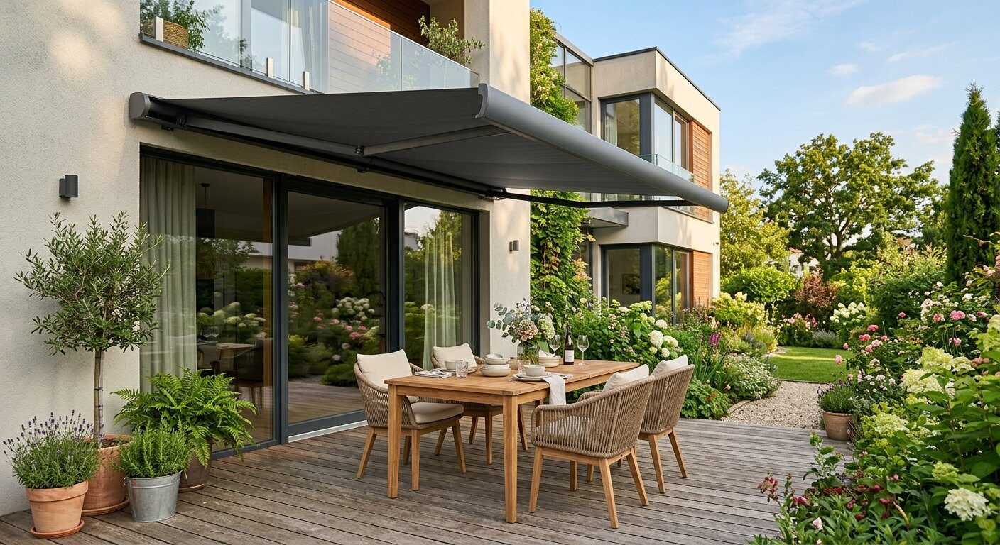

Markizy
Eleganckie i praktyczne markizy pomagają ukryć się przed palącymi promieniami słońca - doskonale zacieniają tarasy, balkony i witryny sklepowe.

Zacienienie na całe lato
Zaletą markiz jest to, że nie są konstrukcją stałą - można je rozwijać i zwijać w zależności od potrzeby. Wykonane są z materiałów nieprzemakalnych, a konstrukcja z profili aluminiowych lakierowanych proszkowo, co gwarantuje długoletnie użytkowanie.
Rozwijanie i zwijanie odbywa się za pomocą przekładni korbowej lub silnika elektrycznego. Bardzo duży wybór materiałów pozwala dopasować markizę do elewacji budynku.
Rodzaje i modele
W ofercie m.in. markizy tarasowe Malta, Silver Plus, Australia, Jamaica, Palladio i Dakar - opisy i zdjęcia na podstronach.